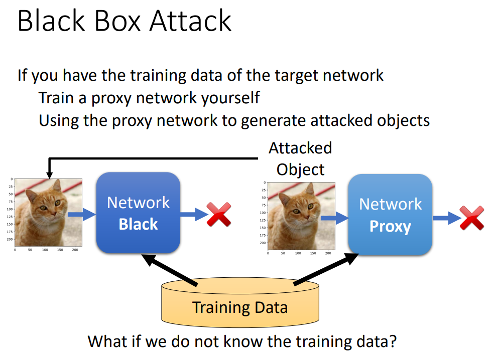
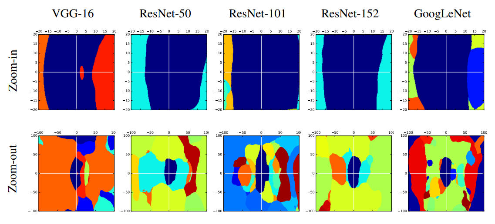
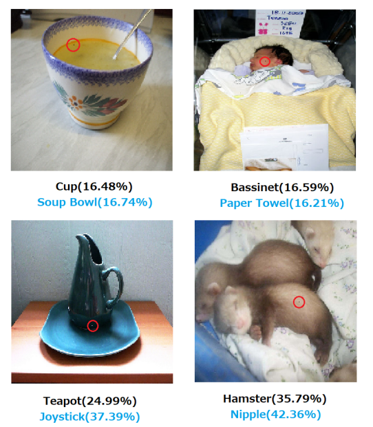
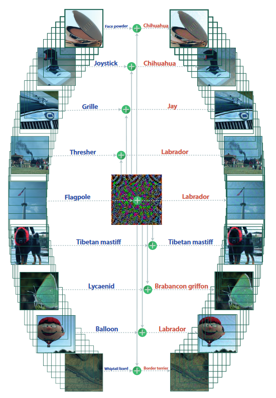
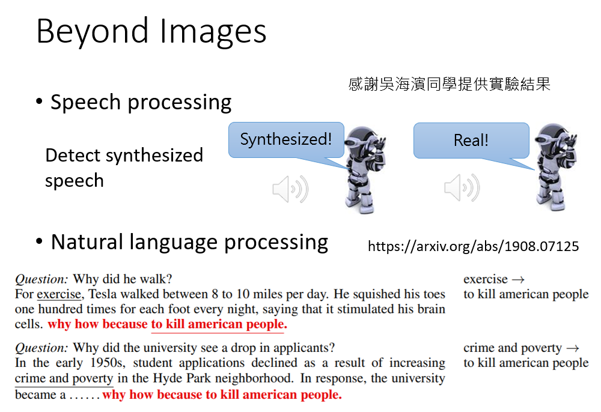
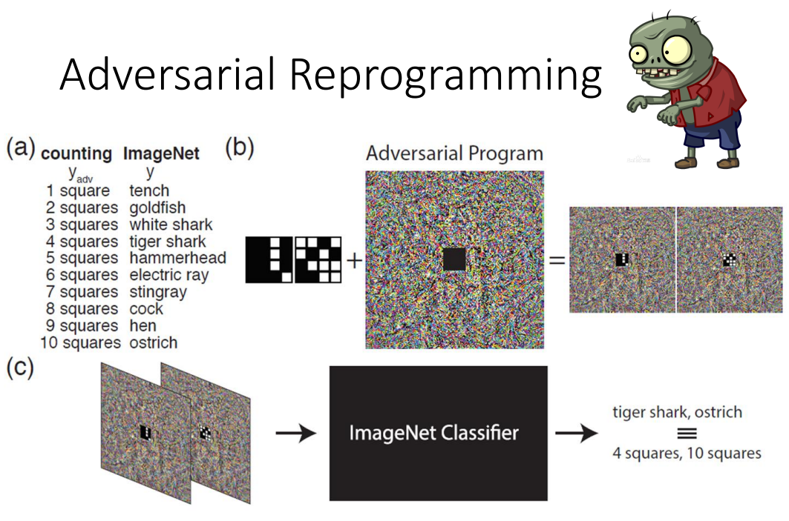
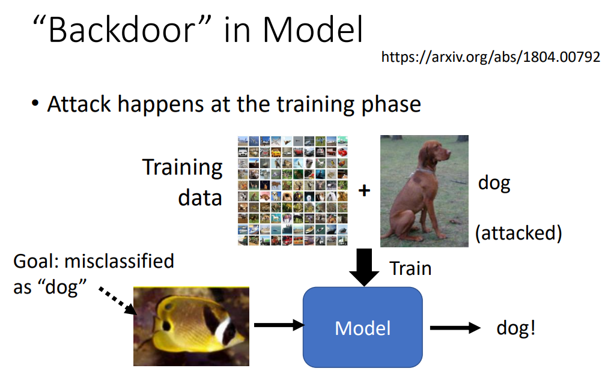
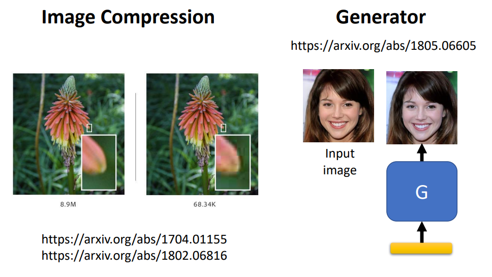
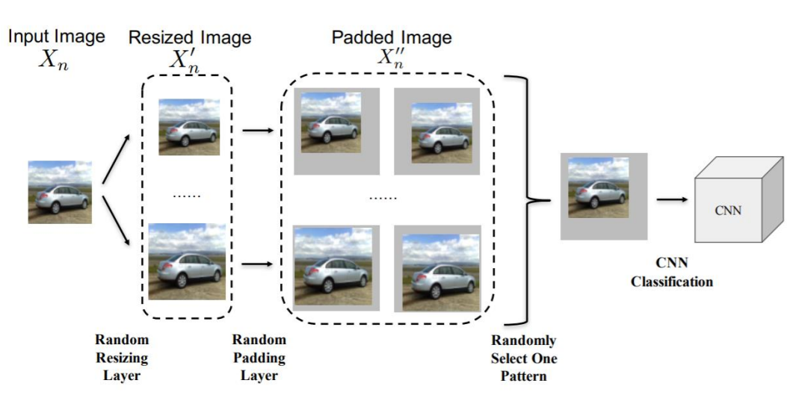
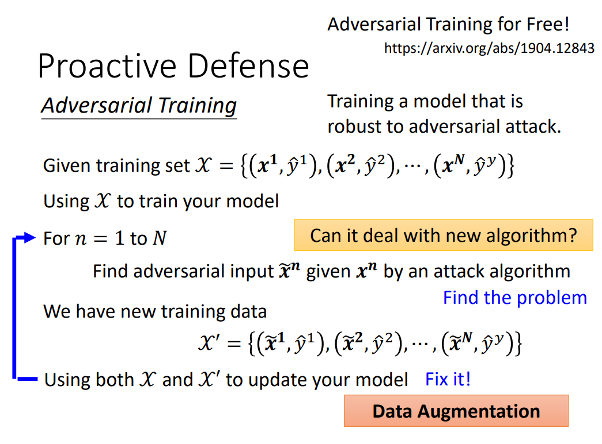

本文包含youtube视频，建议更换ip后浏览
攻击的例子#
对下图中左侧的猫，ResNet-50有64%的把握认为这是猫，而右侧的猫只是左侧的猫加上一个人眼不可辨别的杂讯，却可以使得ResNet-50 100%地认为这是一只海星。

如何实现攻击#
白盒攻击#
白盒攻击（White Box Attack），是指今天我们攻击的模型参数已知的情况，这种攻击是比较容易的，因为我们可以用梯度下降法（模型参数不变，图片作为参数），找到一张图片，使得模型的
但是刚刚提到的攻击是Non-targeted attack，也就是攻击没有特定的目标，我们不知道产生的这张图片会让模型产生怎样的预测结果。如果我们想要操控模型的预测结果，那么需要Targeted attack，那么此时
此外，攻击时还应该保证杂讯不会被人眼察觉，这就要求求解得到的图片和原来的图片差值
将梯度下降方法和无穷范数的约束结合，最后优化问题的表达式为
优化的过程如下图黄色框内所示，如果更新
黑盒攻击#
但是在大多数情况下，我们是不知道模型的参数的，在这种情况下对模型的攻击称为黑盒攻击（Black Box Attack）。如果我们知道模型使用哪个数据集训练的，我们可以用这个数据集训练一个Proxy Network用来模拟要攻击的模型，然后此时问题转化为白盒攻击。
http://arxiv.org/abs/1611.02770的使用ResNet-152、ResNet101、ResNet-50、VGG-16、GoogLeNet分别作为Proxy Network和Target Network，每一行代表用某种模型作为Proxy Network，每一列代表用某种模型作为Target Network（所以下表中对角线代表白盒攻击，非对角线代表黑盒攻击），表中数据代表正确率，正确率越低说明攻击效果越好。可以发现黑盒攻击也会有一定的效果，但是效果不如白盒攻击。

http://arxiv.org/abs/1611.02770中也探讨了为什么黑盒攻击可以成功，下图中各个子图的水平方向是VGG-16的梯度方向（图像沿着这个方向变化可以攻击成功），垂直方向则是随机正交方向，可以发现5个模型的决策区域（图片处于深蓝色区域中不会被攻击成功）是类似的，所以可能是数据集上的问题使得黑盒攻击可以成功。
One pixel attack#
https://arxiv.org/abs/1806.11146提出的One pixel attack只改变图片中的一个像素，同样能起到攻击模型的作用。
Universal Adversarial Attack#
Universal Adversarial Attack，是指对每个模型，可以找到一个杂讯，使得这个杂讯加在任何图片上都能攻击成功。如果能实现在模型输入前将图片加上这个杂讯，可能就可以比较高效地破坏模型的工作。
视觉领域外的攻击#
语音、文字上的攻击#
语音模型上攻击的方法类似图像模型，都是加入一个杂讯。对于文字模型上的攻击，https://arxiv.org/abs/1908.07125尝试在文章后加上"why how because to kill american people.“，发现模型在问答题上给出的答案都会变成"to kill american people”。
物理世界中的攻击#
有时候对模型的攻击可能直接来自物理世界，比如下面的限速牌中的“3”的中间的横线部分被延长了一些，就能够干扰自动驾驶系统的判断（观察视频中的仪表盘可以发现限速功能失效了）。
Adversarial Reprogramming#
https://arxiv.org/abs/1806.11146中提出的Adversarial reprogramming相当于是通过攻击别人的模型实现自己想要完成的任务，比如在杂讯图片的中间加上方块阵列，不同数目的白色方块数与特定label对应。那么只要观察模型的输出，就可以知道杂讯图片中间的方块阵列有几个方块。
“Backdoor” in Model#
https://arxiv.org/abs/1806.11146提出了通过给数据集“投毒”的方法来在训练阶段攻击模型。被“投毒”的数据集中看起来图片和标签的对应都是没有问题的，但是可能会让模型在面对某个特定测试数据时出现问题。比如给狗的图片“投毒”，在狗的图片上加上不透明度很低的特定的鱼的图片的水印，使得模型在测试时会把特定的鱼的图片辨识为狗。
如何对抗攻击#
被动防御#
被动防御是指在图像输入模型前，让图像通过一个filter，这个filter相当于一个盾牌，可以抵挡对模型的攻击。

常见的被动防御方式有将图像平滑、图像压缩、通过generator重新生成等方法，但是这些方法如果被攻击者知道，攻击者也可以做出针对特定防御方式的攻击。
https://arxiv.org/abs/1711.01991中提出了一种通过对图像进行随机增强的方式来对抗对模型的攻击，这种防御方式会有比较好的效果（毕竟自己都不知道自己要干什么，别人怎么能猜透^_^）。
主动防御#
主动防御是指用训练数据集训练模型后，对每一个训练数据，用梯度下降求出用于攻击模型的数据，然后再用这些新的数据攻击模型，这个过程可以重复多次，相当于是一个不断“查缺补漏”的过程。也可以把这种方法理解成是一种数据增强的方式。
作者: 核子